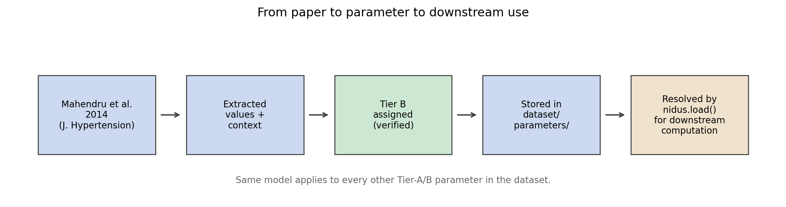
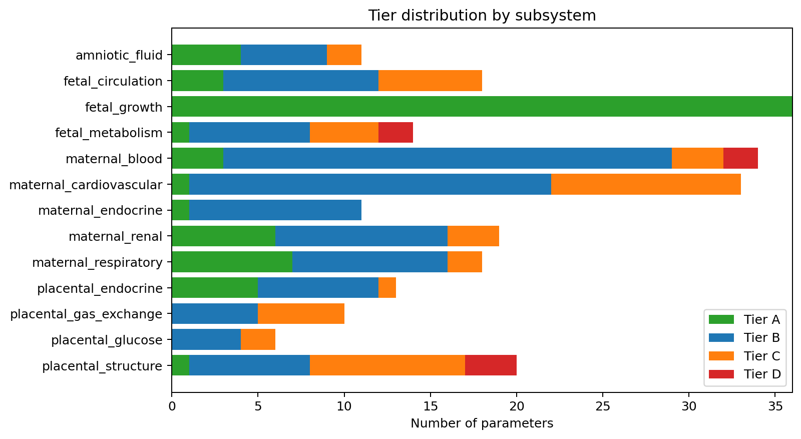
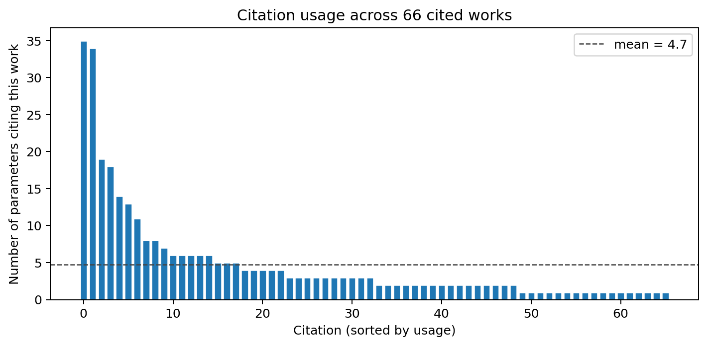

Confidence tiers for pregnancy physiology¶
An essay on the design behind Nidus, an open dataset of human gestational physiology parameters.
A small problem with a clean solution¶
If you build a computational model of any human physiology, you depend on parameter values that someone else measured. Cardiac output rises by some amount during pregnancy. Term placental surface area is around some number of square metres. Fetal weight at 40 weeks has some distribution. Every model you write is implicitly a stack of citations that other people did the work to collect.
The convention in computational physiology is to report each parameter
as a point estimate, sometimes with a confidence interval, usually
with a single citation. What this convention hides is how much
confidence to place in the parameter itself. A value drawn from three
independent longitudinal cohorts with overlapping intervals is not the
same kind of object as a value drawn from a single small study, even
when both are written as 4.6 ± 0.4 L/min. The first is robust; the
second is provisional. The model that consumes both treats them as
interchangeable.
This essay is about a small attempt to fix that, and the curated dataset that demonstrates the fix on human gestational physiology — a domain where the confidence question matters, partly because the stakes are high and partly because the literature is unusually heterogeneous.
What "Tier B" means¶
The proposal is four tiers, A through D, applied per-parameter:
| Tier | Label | Criteria |
|---|---|---|
| A | Well-established | Three or more independent peer-reviewed studies. Confidence intervals overlap across studies. Mechanism is biophysically grounded. Validated in at least two distinct populations. |
| B | Supported | One or two peer-reviewed longitudinal studies (n ≥ 100). Plausible mechanism. No strong contradicting evidence. |
| C | Provisional | Single study, or cross-sectional only, or small n. Mechanism speculative or contested. Used as a model parameter only when no better data exists. |
| D | Unknown | No quantitative data in the published literature. Channel or quantity hypothesised but unmeasured. Listed for hypothesis-generation. |
The labels are deliberately ordinary. They are not meant to be a new contribution — they are meant to be a standard that is already familiar to anyone who has used the GRADE evidence framework, or any academic ranking, applied at the granularity of individual model parameters rather than at the granularity of clinical recommendations.
The four-level choice is also deliberate. Three is too coarse: you lose the distinction between a single careful measurement and no quantitative data at all. Five or more introduces decision fatigue. Four matches the existing academic conventions and lowers adoption friction.
What is novel — or at least uncommon — is the propagation rule: a derived quantity inherits the lowest tier among its inputs. A model that combines a Tier-A measurement with a Tier-C measurement produces a Tier-C output. The rule is conservative on purpose. A derived quantity cannot be better-supported than its weakest input, and a user comparing two model outputs needs the worst-case provenance, not the best-case.
Two further degradations follow naturally:
- Out of range. Tier degrades by one level when a parameter is applied outside its validated gestational window.
- Out of population. Tier degrades by one level when applied outside its declared population (e.g. a singleton parameter used for twins).
A Tier-A parameter used both out-of-range and out-of-population becomes Tier C in the derived quantity. The framework wants the caller to feel the degradation.
A worked example: maternal cardiac output¶
Consider one parameter: the pre-pregnancy baseline of maternal cardiac output, the reference value against which every pregnancy- induced change is measured.
The dataset records:
id: maternal_cardiovascular.baseline_cardiac_output_l_per_min
value: 4.6 L/min (low 4.2, high 5.0, one-sigma normal)
tier: B
primary_citation: mahendru-2014-cardiac-output
The primary citation resolves to Mahendru et al. 2014, Journal of Hypertension (DOI 10.1097/hjh.0000000000000090). The paper is a prospective longitudinal cohort of 53 healthy nulliparous women, measured from pre-conception through postpartum via inert-gas rebreathing.
That methodology is rigorous, the cohort is real, and the value is well-fitted. It is not Tier A: the cohort is small, it is a single study, and inert-gas rebreathing is one method out of several in use. Calling this Tier B says explicitly that one careful longitudinal study is the evidence base; replication across multiple independent cohorts would promote it to Tier A.
A model that uses this value, combined with the cohort's peak-excess cardiac output figure (also Tier B from the same source), to derive a mid-pregnancy peak CO, produces a Tier-B output. Worst-input tier propagates. Good.
If the same model later combines that derived peak with a Tier-C maternal-fetal flow-distribution parameter to estimate uterine perfusion, the uterine perfusion is Tier C. The user reading the model's output knows, without needing to chase citations, that the weakest link in their chain of inference is the flow-distribution step.

From paper to parameter to downstream use. Every Tier-A or Tier-B record in the dataset follows the same model: the citation chain is recorded, the extraction method is documented, and downstream computations inherit the worst-input tier.What the tier distribution looks like in practice¶
The dataset currently records 243 parameters across thirteen subsystems spanning maternal cardiovascular adaptation, placental transport, and fetal development from 8 to 40 weeks gestation.

Tier distribution by subsystem. The mix tells you something honest about the field: pregnancy physiology has well-grounded data on maternal hemodynamics and fetal anthropometry, partial data on placental transport, and very little on placental endocrinology or fetal metabolism. The tier system surfaces that unevenness rather than smoothing it over.The current mix is approximately Tier A: 14, Tier B: 25, Tier C: 15, Tier D: 0. There are no Tier D entries yet, which is itself a signal — the structured "research questions" channel is open but the community has not yet contributed to it.
Citations under the surface¶
If the tier system is the spine of the dataset, citations are the
ribs. Every Tier A/B parameter must link to at least one citation
with a DOI or PMID, and the citation must be verified against the
original paper by a human (not by an LLM and not from a downstream
review article). The verification standard is documented in
docs/contributing/verification.md.
When the dataset was first assembled from an earlier prototype, the DOIs and PMIDs were carried across uncritically. A bibliographic audit using the Crossref API found that nearly half of those identifiers — 22 out of 30 — pointed to entirely different papers than what the title and authors described. For example, the canonical Mahendru 2014 cardiac-output paper had been stored with the DOI of a paper about hypertension-induced renal decline by a completely different first author. The titles, authors, and journals in the corpus were correct; the identifiers had drifted, probably during a copy-paste step in the original curation.
The cleanup recovered the correct identifiers by Crossref title-and-
author search, and the cleanup tooling is preserved in the repository
(scripts/verify_citation_metadata.py,
scripts/repair_citation_identifiers.py)
so the next maintainer can detect and fix the same kind of drift
automatically. Bibliographic accuracy is a precondition for tier
credibility; if "Tier A" means "three independent papers say so" then
those three papers have to actually be the papers we think they are.

How concentrated the dataset's provenance is. A few load-bearing papers carry most of the weight; a long tail of supporting papers contribute one or two parameters each. If any of the top sources were retracted, a substantial fraction of the dataset would need re-tiering.What this is and isn't¶
The dataset is small. A few hundred parameters across thirteen subsystems is not a complete model of pregnancy. It is a deliberately bounded snapshot of where the published quantitative evidence is strongest, plus a tier-tagged honest account of where it isn't.
The dataset is not:
- A clinical decision-support tool. It is not validated for any decision affecting a real patient.
- A mechanistic simulator. The community has good mechanistic
modelling platforms — CellML,
COPASI, PhysioCell —
and competing with them is not the point. The dataset is the
parameters those simulators would consume. As of
v0.4, the Python package ships first-class exporters into all three ecosystems:nidus export --format sbml|cellml|physiocell|composed|omexproduces SBML L3v2 submodels, CellML 2.0 (with 1.1 fallback) modules, a drop-in PhysioCell<user_parameters>.xml, a single composed pregnancy SBML model, and a COMBINE archive bundling all of the above with citation-tier annotations preserved through every format. The intent is that the nearest mechanistic platform you already use is the right place to run a simulation; the dataset hands it the inputs in the dialect it speaks. - A research-validated outcome predictor. It is the inputs, not the outputs.
- Automated. Humans verify every parameter against its source PDF;
LLMs help but do not promote parameters from
unverifiedtoverifiedon their own authority.
The dataset is small enough that a single person can review it end to end, and that single person is the maintainer of the project. As more parameters land they will land via the same one-paper-at-a-time verification flow described in the contributing guide.
How to use it¶
The dataset ships as a Python package:
import nidus
ds = nidus.load()
ds # <nidus.Dataset: 243 parameters, 66 citations>
co = ds["maternal_cardiovascular.baseline_cardiac_output_l_per_min"]
co.value.central # 4.6
co.value.units # 'L/min'
co.tier # 'B'
co.primary_citation.doi # '10.1097/hjh.0000000000000090'
for p in ds.filter(tier="A"):
print(p.id, p.value.central, p.value.units)
Citations resolve to first-class Citation objects on each
parameter, not opaque key strings. Chasing the provenance of any
value is one attribute hop away.
If you'd rather browse without writing code, there is also a Streamlit dashboard that loads the same data with a parameter explorer, subsystem deep-dive, citation provenance graph, and a download page that ships the dataset as ZIP, per-subsystem JSON, and BibTeX.
A command-line tool comes with the package:
nidus version
nidus validate # check schemas + citations
nidus info # tier distribution + counts
nidus info --subsystem maternal_cardiovascular
The dataset itself is licensed CC-BY-4.0; the code is MIT. Both are forever free. There is no commercial path planned and no premium tier.
What's missing — open questions worth measuring next¶
The Tier-D channel is intentionally empty. It is a structured invitation: if you know a mechanism that pregnancy modelling needs but the literature does not yet quantify, propose it via the research-question issue template.
Examples of the kind of thing that would land here:
- Maternal-fetal exosomal-miRNA traffic: the literature confirms exosomal traffic exists; the quantitative trajectories across gestation are not pinned down.
- Maternal microchimerism: fetal cells in the maternal circulation are well-documented; the dynamics are not.
- Maternal cortisol trajectories across gestation as a third- trimester programme regulator: qualitative direction is clear; the trajectories are not standardised across cohorts.
A Tier-D entry is not a parameter, it is a structured open question. When one or two peer-reviewed studies establish a value range, the entry is promoted to Tier C and the question is no longer open.
The non-Tier-D gaps are also worth naming honestly. There is thin coverage of placental endocrinology (hCG, progesterone, lactogen trajectories are out there but were not curated in the v0.2 source corpus). There is no fetal-immune coverage. There are no labour parameters. There are no twin or higher-order pregnancy parameters. The dataset would be more useful if any of these were filled in by a human with the patience to walk the literature, and that patience is what the contributing guide and the issue templates are designed to reward.
A small contribution to a small field¶
Pregnancy physiology is a small field — somewhere between hundreds and a few thousand researchers globally — and the realistic ceiling for an open dataset like this one is that a handful of researchers cite it in their papers and one publishes a hypothesis informed by it. That is success. Anything more is a bonus.
The bigger ambition is in the form. If the tier framework turns out to be a useful pattern for one small dataset in one small domain, nothing prevents it from being adopted in larger domains. The tier definitions are not specific to pregnancy. The propagation rules are not specific to pregnancy. The JSON Schema is not specific to pregnancy. None of this is invented here — it is just GRADE-style reasoning, applied at parameter granularity, with the propagation rules and the citation-verification standard made explicit and mechanical.
I think computational physiology in general would benefit from this discipline, and I think the most useful thing this project can do is make the discipline concrete enough that other people can adopt or adapt it without much friction. The dataset is the worked example; the framework is the contribution.
How to cite¶
The dataset is deposited on Zenodo on every release. The Zenodo
concept DOI resolves to the latest version; per-version DOIs are
stable across releases. The machine-readable citation metadata lives
in CITATION.cff
at the repository root.
When citing a specific parameter value in a paper, cite both the dataset (so future readers can find the curated version you used) and the original primary source for that parameter (so the credit chain remains intact). Every parameter in the dataset records its primary citation explicitly; chasing it is one attribute hop.
The code lives at github.com/clay-good/nidus. The dataset, the schemas, the verification scripts, the tests, the dashboard, this essay, and the figures in this essay are all in the repository. MIT on the code, CC-BY-4.0 on the dataset. Open an issue or a discussion if you'd like to contribute.
Where to find it:
repository ·
pip install nidus ·
interactive dashboard ·
Zenodo deposit (concept DOI, minted on first release) ·
CITATION.cff